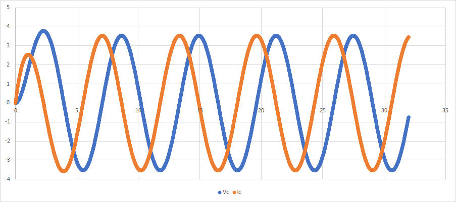

新龙格-库塔算法求微分方程（组）的实现
有关数学原理部分，请参考龙格-库塔算法求微分方程（组），本文着重描述
RK4的Python 实现。
最终效果如下：
from RK4 import Module
m = Module()
m.s3 = m.create_state(lambda m: math.sin(m.time.val()), init_value=-1.0)
m.s4 = m.create_state(lambda m: -math.sin(m.time.val()), init_value=1.0)
for i in range(10):
print(m.s3.curr_value,m.s4.curr_value)
m.calc()
# 或者
m.simulate(stop_at=1)状态对象
按照控制系统的叫法，我们称 称为状态空间方程。这里我们将一个方程封装成一个对象，其：
- 方程左边是对象名，也是某一变量的微分
- 方程右边是方程的算法函数
- 另外，该方程还应包含：
- 初始值
- 计算结果或当前值
- 斜率的缓存：至少包括
k1~k4 - 计算的步长：
h - 当前计算的阶数：
1,2,3,4其中的一个
因为我们在计算过程中的需要先遍历状态方程，再遍历计算阶数。所以我们需要根据当前的阶数信息，返回不同的状态值给算法函数，所以我们封装了val() 闭包函数，可以根据步长等信息返回每次计算时所需要的参数值。具体请参考龙格-库塔算法求微分方程（组）。以下是代码实现：
class State():
def __init__(self, func=lambda module: 0, init_value=0, h=0.001) -> None:
self.init_value = init_value # 变量初始值
self.curr_value = init_value # 暂存计算结果
self.k = [.0, .0, .0, .0, .0] # k0 = (k1+2*k2+2*k3+k4)/6
self.index = 1 # 当前需要计算k?: 1,2,3,4
self.h = h # 迭代步长，不要手动修改
self.func = func # 方程右边的算法，是一个lambda 函数，参数是一个模块
def val(self): # 根据k_n 计算状态值，并将该状态值作为求解k_{n+1} 的参数返回给lambda 函数
temp_value = 0 # 该方法容易扩展到更高阶
if self.index == 1:
temp_value = self.curr_value
elif self.index == 2:
temp_value = self.curr_value + 0.5*self.h*self.k[1]
elif self.index == 3:
temp_value = self.curr_value + 0.5*self.h*self.k[2]
elif self.index == 4:
temp_value = self.curr_value + self.h*self.k[3]
return temp_value
def calc(self): # 计算最终斜率存储到k0，并利用k0 算出最终结果
self.k[0] = (self.k[1]+2*self.k[2]+2*self.k[3]+self.k[4])/6
self.curr_value = self.curr_value + self.h*self.k[0]
def reset(self): # 重置状态，在重启计算时需要
self.curr_value = self.init_value模块对象
模块对象是唯一对外导出的对象，相当于一个微分方程组的上下文，包含有若干状态变量与仿真步长等信息，至少包含一个默认的状态变量time。其代码如下：
class Module():
def __init__(self, h=0.01) -> None:
self.h = h # 模块的步长最终（必须）会更新到到所有状态变量中
self.res = []
self.time = self.create_state(lambda m: 1) # 创建一个默认状态变量time
def create_state(self, func, init_value=0): # 创建状态变量
return State(func=func, init_value=init_value, h=self.h)
def reset(self): # 重置计算过程，依次重置所有状态变量
for prop_name in dir(self):
prop = getattr(self, prop_name)
if (isinstance(prop, State)):
assert type(prop) == State
prop.reset()
def calc(self):
res = []
for index in range(1, 5): # 计算每个属性的 k1,k2,k3,k4
for prop_name in dir(self):
prop = getattr(self, prop_name) # 遍历所有属性，筛选State 类型用于计算，似乎是按属性名排序的
if (isinstance(prop, State)):
assert type(prop) == State
prop.index = index # 更新状态变量的阶数，使得prop.val() 函数能返回正确的值
prop.k[index] = prop.func(self) # 将计算结果暂存到对应的状态变量中
# 根据上面计算的k1~k4 数据，计算这一步的k0 和结果，并以数组的形式返回
for prop_name in dir(self):
prop = getattr(self, prop_name)
if (isinstance(prop, State)):
assert type(prop) == State
res.append(prop.curr_value)
prop.calc()
return res
def get_states(self):
res = []
for prop_name in dir(self):
prop = getattr(self, prop_name)
if (isinstance(prop, State)):
res.append(prop_name)
return res
def set_step(self, h=0.01): # 重新设置步长，越小越精确
self.h = h
for prop_name in dir(self):
prop = getattr(self, prop_name)
if (isinstance(prop, State)):
assert type(prop) == State
prop.h = self.h
def simulate(self, stop_at = 1):
print("----- simulation started -----")
self.reset()
self.res.append(self.get_states())
i = 0
while i <= stop_at+self.h: # 保证计算覆盖范围
self.res.append(m.calc())
i += self.h计算DAE
龙格库塔算法在计算常微分方程（ODE）时，很好用，但是它需要方程组具有标准的形式，即每个方程的左边是一个微分，且微分符号只能存在于左边。而在工程上我们会用到很多守恒定律，例如KCL/KVL。这样会有一些方程左右两边都是代数方程的情况，混合有微分方程和代数方程的情况被称为“微分代数方程”，简称DAE。这时，我们需要将方程移项、微分处理，手工转换成标准ODE 形式，然后再进行计算。虽然比较麻烦，但是如果手头上没有专门的DAE 求解器的话，这也是一个很好的思路。例如最开始的算例中，实际上等效于：
但是不能写作下面的形式，因为ODE 右边不能包含微分：
from RK4 import Module
m = Module()
m.s3 = m.create_state(lambda m: math.sin(m.time.val()), init_value=-1.0)
m.s4 = m.create_state(lambda m: -m.s3.val(), init_value=1.0)
m.set_step(0.001)
m.simulate(stop_at=1)
print(m.res)系统对象
2022-12-18 更新。上面的代码直接可以复制运行，而下面的部分是根据上述想法，将模块提取为一个中间层，方便复杂系统的建模与抽象。代码已经更新到rk4.py，具体改动为：
- 最大的改动是要代码能够满足IDE 的提示需求
create_*()函数会自动创建并添加到self对象，同时返回创建对象的引用- 需要注意的是，不要有重名的现象
- 无论是模块、还是状态，都会根据
System获取步长h和index信息 - 取消状态方程的传入参数，因为复杂的系统通过引用传递更方便
- 龙哥-库塔的迭代过程也由
System完成 - 考虑系统的复杂程度，
System.calc()不再自动记录计算结果，需要用户自己统计需要的数据。不排除后面会添加，但是现在能写出来就不错了。
下面是System 类的代码：
class System():
def __init__(self, h=0.01) -> None:
self.h = h
self.index = 1
self.create_timer()
pass
def get_h(self):
return self.h
def create_module(self, name="module"):
module_name = "/"+name
module = Module(module_name, get_h=lambda: self.h,
get_index=lambda: self.index)
setattr(self, module_name, module)
return module
def create_timer(self): # system 的timer 是一个状态的引用，如果是一个模块的引用的话，将会导致该timer 被计算两次
timer = self.create_module("timer")
self.timer = timer.create_state(
"time", lambda: 1, init_value=0)
def calc_k1_to_k4(self):
for index in range(1, 5): # 计算每个属性的 k1,k2,k3,k4
self.index = index
for module_name in dir(self):
# 遍历所有属性，筛选State 类型用于计算，似乎是按属性名排序的
module: Module = getattr(self, module_name)
if (isinstance(module, Module)):
module.index = index # 更新状态变量的阶数，使得prop.val() 函数能返回正确的值
module.calc_k1_to_k4()
def calc_k0(self):
# 根据上面计算的k1~k4 数据，计算这一步的k0 和结果，并以数组的形式返回
for module_name in dir(self):
# 遍历所有属性，筛选State 类型用于计算，似乎是按属性名排序的
module: Module = getattr(self, module_name)
if (isinstance(module, Module)):
module.calc_k0()
def reset(self):
for module_name in dir(self):
module: Module = getattr(self, module_name)
if (isinstance(module, Module)):
module.reset()
def calc(self):
self.calc_k1_to_k4()
self.calc_k0()
def simulate(self):
pass
pass测试代码如下：
##### Test #####
# u = 5v
# r = 1 Ω
# c = 1 H
# 三种元件串联，得：
# 1. du_vol = 0, u_vol_0 = 5
# 2. dc_vol = i/c = r_vol/r/c, c_vol_0 = 0 # 流入为正
# 3. dr_vol = -i/c = -r_vol/r/c, r_vol = -5
sys = System(0.01)
U = 5
R = 1
C = 1
u = sys.create_module("u") # 电源模型
u_h = u.create_state("u_h", func=lambda: U*math.cos(sys.timer.val()), init_value=0)
u_l = u.create_state("u_l", func=lambda: 0, init_value=0)
r = sys.create_module("r") # 电阻模型
r_i = r.create_state("r_i", func=lambda: (
u_h.func()-r_l.func())/R, init_value=0) # lambda 函数中可以通过.fun()调用其他状态的微分 # 初始值在某种程度上决定了电路的运行状态
c = sys.create_module("c") # 电容模型
c_h = c.create_state("c_h", func=lambda: u_l.func() +
r_i.val()/C)
# 连接点处电压相同
r_h = u_h
c_l = u_l
r_l = c_h
# 环路电流处处相等
u_i = c_i = r_i
for i in range(3200):
sys.calc()
print(i*0.01,c_h.curr_value, c_i.curr_value)
电感的响应如下：

如果需要更高的精度，还可以升级到更高的阶数。只需修改状态变量中高亮的代码部分就行了。源代码。需要用户对物理模型非常非常熟悉才行，算是一种不完整的模块化吧。照着真正的建模语言还有很大的差距 😦
2022-12-18 上海